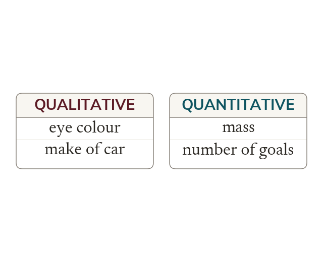
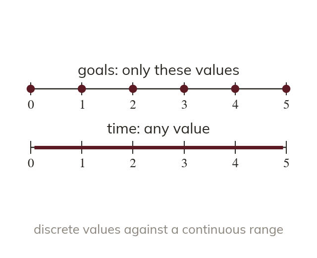
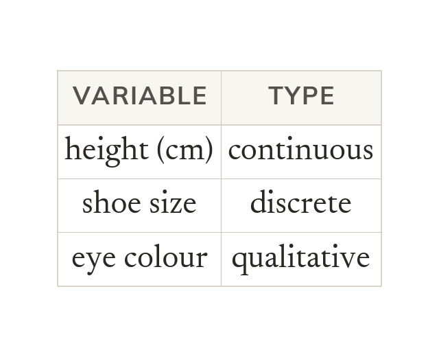
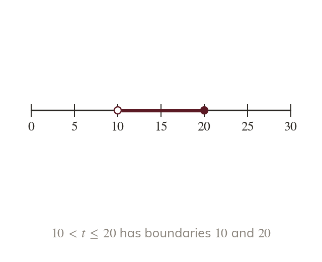
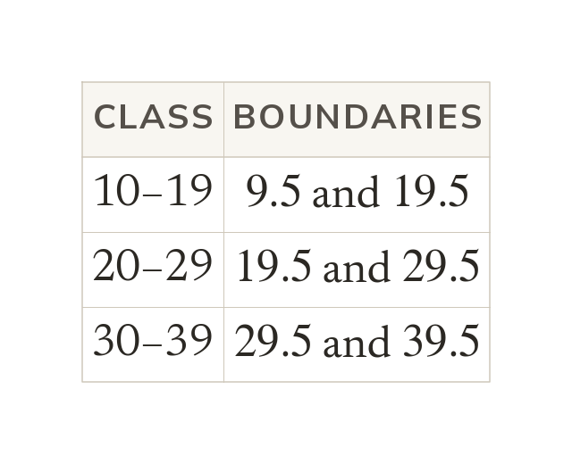
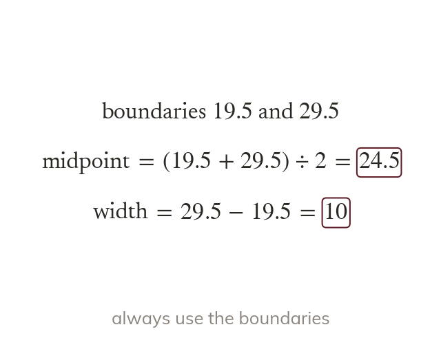

Words or numbers
Qualitative data are words or categories, such as eye colour. Quantitative data are numbers, such as mass.
The type of data a sample collects decides how it can be shown and summarised. Grouped data hide the values inside each class, so the boundaries, midpoints and widths found here are what the next chapter uses to estimate the mean and draw histograms.
Work down the page at your own pace. Write every answer in your book first, then click to check it.
Read each card, then follow the worked examples one step at a time.

Qualitative data are words or categories, such as eye colour. Quantitative data are numbers, such as mass.

Discrete data take only certain values, such as a count. Continuous data take any value in a range, such as a length.

A height recorded as cm is still continuous. Shoe size is discrete, as it takes only certain values.
Pick an answer. If it's wrong, the feedback tells you which mistake it was.
Write the blanks in your book first, then tap each one to check.
Read each card, then follow the worked examples one step at a time.

The boundaries are the least and greatest values a class could hold. With no gaps, they are the numbers in the inequality.

Data recorded to the nearest whole number leave gaps, as in 10–19 and 20–29
The boundary sits halfway across each gap, at

The midpoint is half the sum of the boundaries. The width is the upper boundary minus the lower.
Pick an answer. If it's wrong, the feedback tells you which mistake it was.
Write the blanks in your book first, then tap each one to check.
Finished? Next lesson: S1.5 The Large Data Set.
For each skill, tap the one that is true for you today. Your Revise pages start with anything you mark Not yet.
Your ratings are saved on this device only.
Log in, then search for a code to practise that skill.